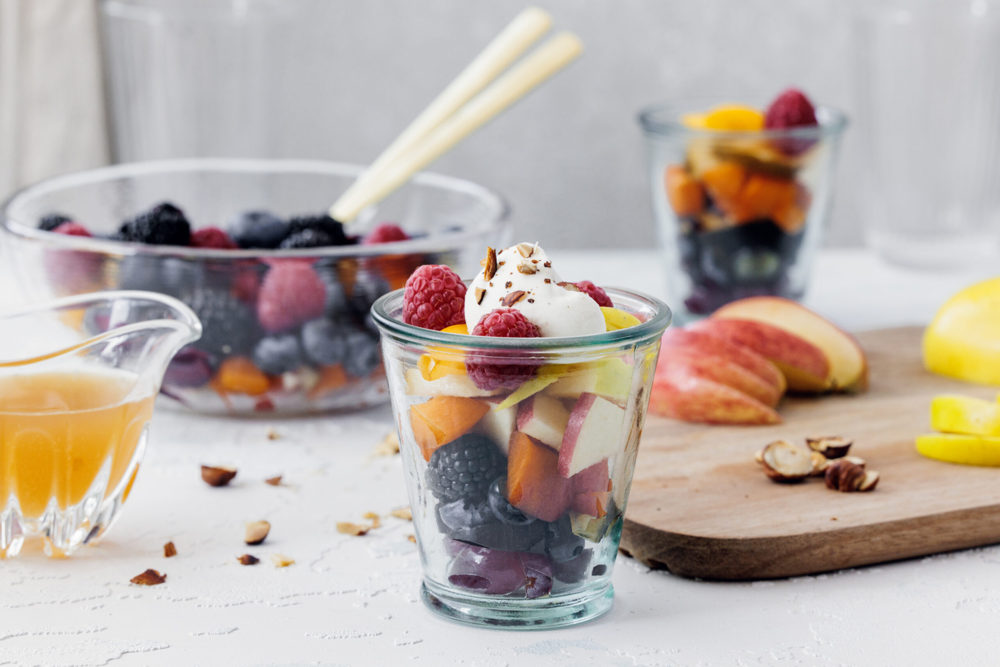

1. Alle Früchte waschen, schälen und in kleine Stücke schneiden.
2. Die geschnittenen Früchte in eine grosse Schüssel geben.
3. Den Zitronensaft über die Früchte träufeln und vorsichtig vermischen.
4. Nach Belieben mit Zucker oder Honig süssen und nochmals vorsichtig vermischen.
5. Den Fruchtsalat für mindestens 30 Minuten im Kühlschrank ziehen lassen, damit sich die Aromen verbinden.
6. Anrichten und mit frischen Minzblättern garnieren.
Je nach Saison kann der Salat mit anderen Früchten und Beeren zubereitet werden. Im Winter eignen sich vor allem rote und grüne Äpfel und Birnen, im Sommer ergänzen Beeren den Fruchtsalat optimal. Welche Früchte und Beeren aktuell Saison haben, zeigt dir der Saisonkalender von Swissmilk.
1 Portion enthält:
Energie: 900 kJ / 215 kcal, Fett: 13 g, Kohlenhydrate: 22 g, Eiweiss: 2 g